Research
Recent Publications/Preprints
01Digital Technologies & Political Persuasion
Click for Abstract & Key Figure
Does social commentary influence the effects of political deepfakes? To answer this question, we rely on a survey experiment based in Kenya ( N = 7,000). The experiment saw respondents view a generated clip of presidential candidates discussing their role in a fabricated corruption scheme coupled with embedded comments expressing varied levels of skepticism. In line with prior work, we first show that social commentary shapes how audiences interpret media. Next, we go beyond this initial finding to examine how commentary in social environments can shape the perceived authenticity of entire videos by integrating a novel survey instrument aimed at improving the ecological validity of our experimental design. Using this instrument, we find that comments which failed to remark on the synthetic origins of the video reduced support for the politician, while skeptical comments partially restored it. Partisanship also mattered, as respondents more readily dismissed deepfakes targeting candidates they supported compared to opposing candidates. Our findings highlight how the social context in which users view AI-generated disinformation can reshape audience perceptions, particularly in contexts that lack sufficient resources to maintain effective moderation systems. We conclude that audience-driven “collective sensemaking” can critically alter the influence of deepfakes, introducing both challenges and opportunities for the development of countermeasures for mitigating the influence of audio-visual disinformation. Our discussion emphasizes the need for research on deepfakes and related forms of multi-modal AI-generated content to take socio-political contexts into account when considering the direction of influence and potential for harm.

Click for Abstract & Key Figure
Can deceptive use of generative artificial intelligence (AI) in advertisements influence support for political parties? Drawing on a survey experiment based on the tactics of a secessionist movement in South Africa, this study assesses whether targeting out-group ethnicities with diverse deepfake avatars can alter voter support. We iterate from existing work by varying the ethnicity of the presenter to assess whether AI-assisted alterations to author ethnicities can mobilize support for minority parties. The results indicate that coethnic speakers are more effective at mobilizing both personal and perceptions of societal support, even when content includes AI labels. Additional analyses indicate that AI literacy scores better predict respondents’ abilities to identify synthetic content than digital literacy and that coethnic avatars reduce skepticism toward AI-assisted messaging campaigns. The results of the study have implications for researchers and policy makers interested in understanding how synthetic media may be used for deceptive purposes in political campaigns.
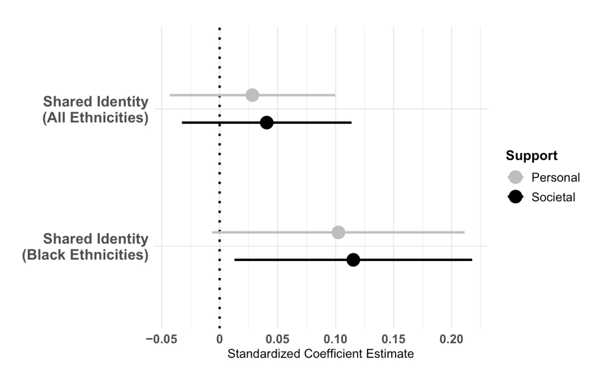
Click for Abstract & Key Figure
As AI-enabled social media bots become increasingly sophisticated, understanding the psychological mechanisms underlying human bot detection becomes crucial for maintaining online information integrity. Many users struggle to distinguish between human-run accounts and increasingly sophisticated AI-enabled bots. This study examines how content diversification—mixing non-political content with political messaging—influences users' authenticity judgments of social media accounts. Using real bot profiles from an online influence campaign identified during the 2024 U.S. election, we conducted two experiments exposing participants to X profiles containing either political-only content or mixed political and sports content. Across both studies (N = 565 undergraduate students; N = 601 adults), content diversification did not directly affect bot classification but significantly enhanced perceived trustworthiness, which in turn increased the likelihood of classifying accounts as human-operated. Study 2 revealed that this trustworthiness pathway was moderated by political ideology. Overall, these findings help shed light on the decision-making processes of users as they encounter new strategies to mask AI-developed content.
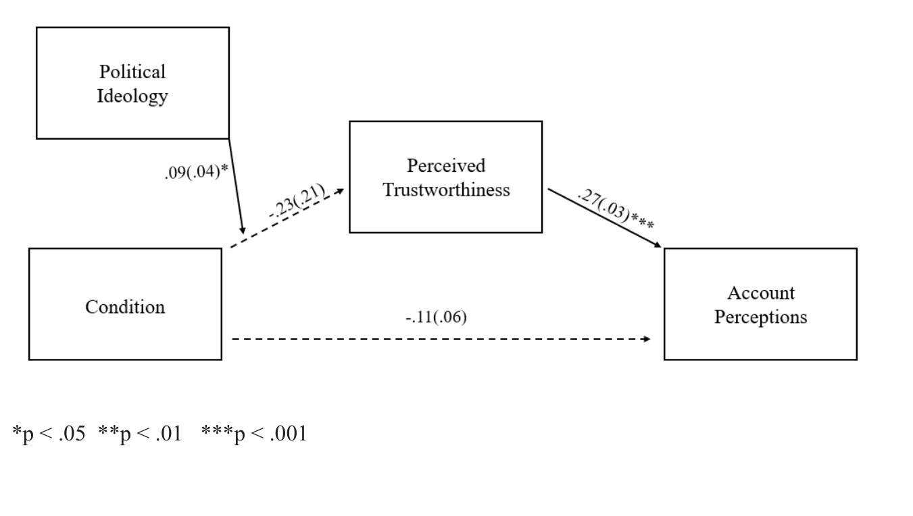
Click for Abstract & Key Figure
Can AI bolster state-backed propaganda campaigns, in practice? Growing use of AI and large language models has drawn attention to the potential for accompanying tools to be used by malevolent actors. Though recent laboratory and experimental evidence has substantiated these concerns in principle, the usefulness of AI tools in the production of propaganda campaigns has remained difficult to ascertain. Drawing on the adoption of generative-AI techniques by a state-affiliated propaganda site with ties to Russia, we test whether AI adoption enabled the website to amplify and enhance its production of disinformation. First, we find that the use of generative-AI tools facilitated the outlet’s generation of larger quantities of disinformation. Second, we find that use of generative-AI coincided with shifts in the volume and breadth of published content. Finally, drawing on a survey experiment comparing perceptions of articles produced prior to and following the adoption of AI tools, we show that the AI-assisted articles maintained their persuasiveness in the postadoption period. Our results illustrate how generative-AI tools have already begun to alter the size and scope of state-backed propaganda campaigns.
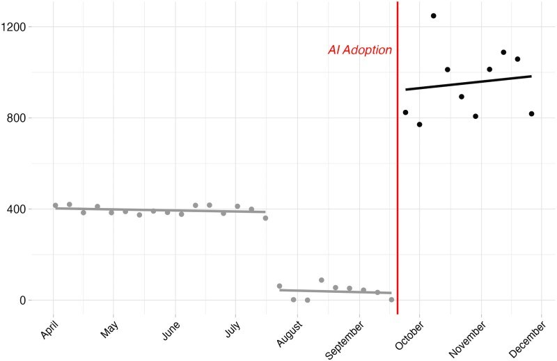
Click for Abstract & Key Figure
The prevalence and spread of online misinformation during the 2020 US presidential election served to perpetuate a false belief in widespread election fraud. Though much research has focused on how social media platforms connected people to election-related rumors and conspiracy theories, less is known about the search engine pathways that linked users to news content with the potential to undermine trust in elections. In this paper, we present novel data related to the content of political headlines during the 2020 US election period. We scraped over 800,000 headlines from Google's search engine results pages (SERP) in response to 20 election-related keywords—10 general (e.g., "Ballots") and 10 conspiratorial (e.g., "Voter fraud")—when searched from 20 cities across 16 states. We present results from qualitative coding of 5,600 headlines focused on the prevalence of delegitimizing information. Our results reveal that videos (as compared to stories, search results, and advertisements) are the most problematic in terms of exposing users to delegitimizing headlines. We also illustrate how headline content varies when searching from a swing state, adopting a conspiratorial search keyword, or reading from media domains with higher political bias. We conclude with policy recommendations on data transparency that allow researchers to continue to monitor search engines during elections.
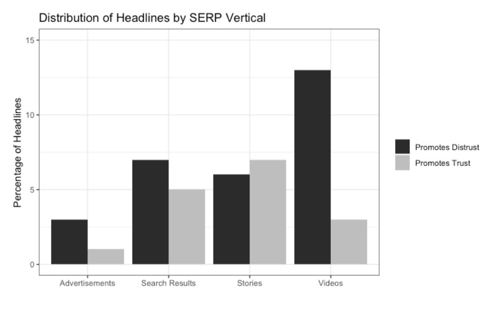
02Information Environments
Click for Abstract
Political information environments around the world are facing the twin challenges of misinformation and disinformation, which degrade the quality of public discourse, undermine political stability, and weaken social cohesion. It is therefore important to understand the conditions under which countries are at risk from misinformation and disinformation. In recent years, several indexes have been developed by scholars, think tanks, advocacy groups, and technology companies aimed at diagnosing and comparing these risk and protective conditions. Yet, systematic cross-index comparison remains limited. This Synthesis Report (TP2026.1) addresses this gap by developing a typology of existing measures, providing a systematic comparative analysis of ten published indexes, and offering a fitness-for-purpose guide for researchers, policymakers, and index producers. Our analysis reveals three key insights: The concepts of vulnerability and resilience provide a foundational framework for understanding how political misinformation and disinformation are amplified or mitigated and for comparing countries over time. However, because most indexes rely on structural, perceptual, or behavioral proxies rather than direct measures, their scores should therefore be read as comparative diagnostics rather than estimates of disinformation prevalence. Several indexes offer valuable and complementary insights, but they diverge in their theoretical assumptions, methodologies, and the aspects of the political information environment they emphasize. Caution is therefore required to avoid overgeneralizing cross-national rankings, and triangulation across complementary measures is often advisable. Although the ten indexes considered in this report were designed to address political misinformation and disinformation, their underlying logic can be applied to the broader task of measuring political information environments and information integrity. By evaluating the strengths, good practices, and shortcomings of these ten indexes, this report highlights the critical dimensions and measures that can guide a theoretically informed, methodologically robust, and globally sensitive next-generation index. It concludes with guidance for using index results responsibly.
Click for Abstract & Key Figure
Can state election policies affect the spread of misinformation? This paper studies the role played by ballot processing policies, which determine when ballots can be examined and organized, in the online spread of political misinformation. We present evidence from the 2020 U.S. presidential election cycle linking the spread of misinformation in the aftermath of the election to the uncertainty created by these restrictions. Specifically, using a novel dataset of 317 misinformation stories constructed using over 4,700,000 posts collected in real‐time throughout the 2020 electoral period, we examine whether restrictions on the ability of election officials to process ballots corresponded with increases in the prevalence of misinformation on X/Twitter. We find that, relative to states with restrictions, states that allowed ballots to be processed in advance of the election were subjected to fewer misinformation stories. The results suggest that policymakers interested in limiting the amount of misinformation targeting their state institutions should remove barriers to pre‐election ballot processing.
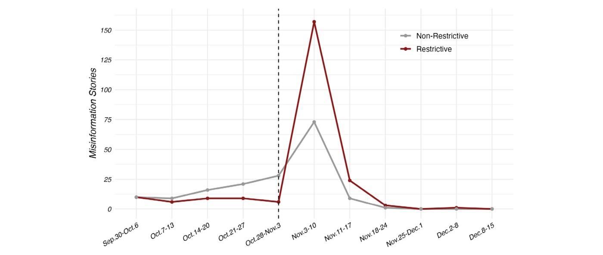
Click for Abstract & Key Figure
The 2020 United States (US) presidential election was — and has continued to be — the focus of pervasive and persistent mis- and disinformation spreading through our media ecosystems, including social media. This event has driven the collection and analysis of large, directed social network datasets, but such datasets can resist intuitive understanding. In such large datasets, the overwhelming number of nodes and edges present in typical representations create visual artifacts, such as densely overlapping edges and tightly-packed formations of low-degree nodes, which obscure many features of more practical interest. We apply a method, coengagement transformations, to convert such networks of social data into tractable images. Intuitively, this approach allows for parameterized network visualizations that make shared audiences of engaged viewers salient to viewers. Using the interpretative capabilities of this method, we perform an extensive case study of the 2020 United States presidential election on Twitter, contributing an empirical analysis of coengagement. By creating and contrasting different networks at different parameter sets, we define and characterize several structures in this discourse network, including bridging accounts, satellite audiences, and followback communities. We discuss the importance and implications of these empirical network features in this context. In addition, we release open-source code for creating coengagement networks from Twitter and other structured interaction data.
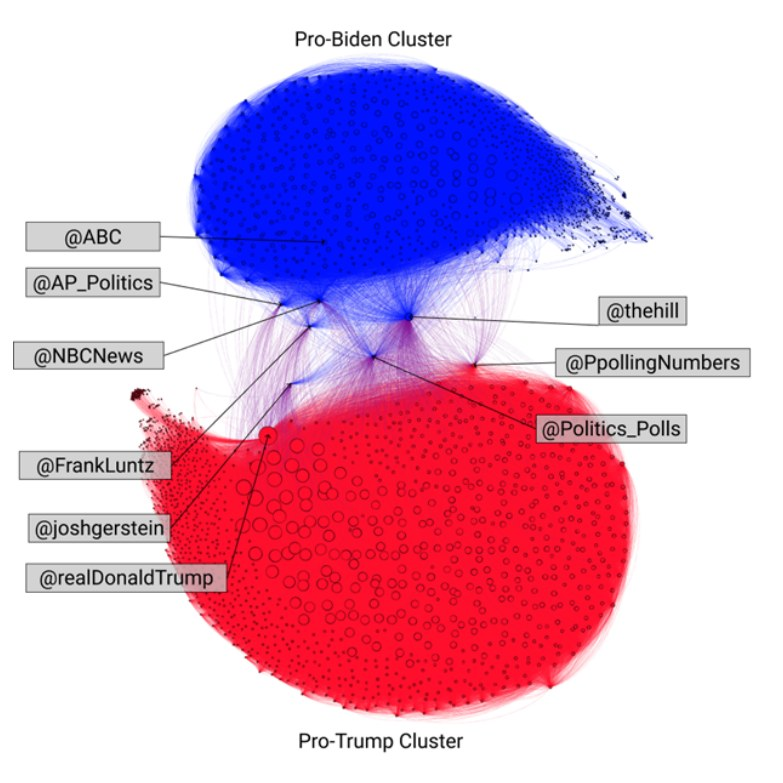
Click for Abstract & Key Figure
Wildlife conservancies across the globe are increasingly recognizing their need to support their surrounding communities to sustainably operate. Rapidly shifting environmental and sociopolitical climates increasingly stress existing resource and service provisions, forcing wildlife conservancies to co-manage with local communities shared resources like water, wildlife, soil, pollinators, and security. This work presents a case study in Laikipia, Kenya on Ol Pejeta Conservancy's use of text-based technologies to provide services and build relationships with the many widely-dispersed communities on its borders. Through technology deployments, staff interviews, and community focus groups, we investigate a potential role for basic mobile phone services, like SMS and USSD, to help conservancy personnel disseminate accurate and timely information, gather community feedback, address grievances, and improve accountability. Our findings show that communication with locals requires intense and ongoing effort from conservancy staff. Partially successful deployments of phone services provide a proof-of-concept for their utility in community relations but highlight particular design challenges for wildlife conservancies; having critical needs for broad inclusive engagement; clear, deliberate communication; and careful trust-building.
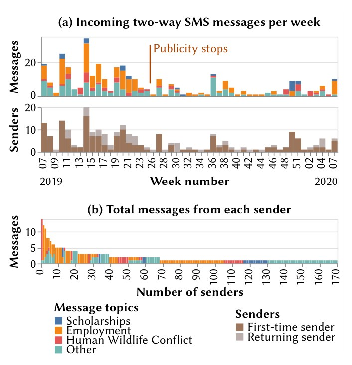
03Interventions
Click for Abstract & Key Figure
Given that the spread of false information online often outpaces efforts to address it, it is important to understand i) what content is the most important to remove to prevent false beliefs and ii) whether lay intuitions about content removal are aligned with these findings. In four experiments, participants viewed social media posts containing false evidence for novel conspiracy theories. In Experiment 1 (N = 300), removing posts containing plausible evidence significantly decreased participants'conspiracy belief, while removing posts containing implausible evidence did not. In Experiments 2a-2c (Ns = 350, 352, 351, respectively), we investigated new participants' moderation preferences for the same posts. Worryingly, participants chose to remove posts containing implausible evidence more often than posts containing plausible evidence (Exp. 2a-2b). And, even when oriented to the goal of reducing belief in the broader conspiracy theory, participants still removed both types of posts at similar rates (Exp. 2c). Our results suggest that relying on lay intuitions to guide content removal decisions may result in prioritizing the removal of content that does not substantively contribute to the spread of broader false beliefs over content that does. These findings have important implications for moderation efforts and highlight the need to look beyond belief in isolated claims when developing effective misinformation interventions.
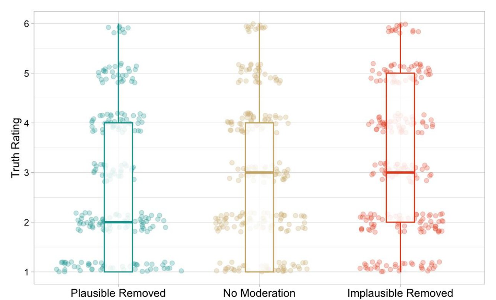
Click for Abstract & Key Figure
Fact-checking has been promoted as a key method for combating political misinformation. Comparing the spread of election-related misinformation narratives along with their relevant political fact-checks, this study provides the most comprehensive assessment to date of the real-world limitations faced by political fact-checking efforts. In conceptualizing these barriers to impact, this study extends recent work from laboratory and experimental settings to the wider online information ecosystem present during the 2022 U.S. midterm elections. We find that fact-checks as currently developed and distributed are severely inhibited by constraints on their i. coverage, ii. speed, and iii. reach, which we link to fundamental challenges to the production economies and information asymmetries that differentiate corrections from misinformation. Specifically, we provide evidence that fewer than half of all prominent election-related misinformation narratives were fact-checked. Within the subset of fact-checked claims, we find that the median fact-check was released a full four days after the initial appearance of a narrative. Using network analysis to estimate user partisanship and dynamics of information spread, we find additional evidence that fact-checks make up less than 1.2% of narrative conversations and that even when shared, fact-checks are nearly always shared within, rather than between, partisan communities. Finally, we provide empirical evidence which runs contrary to the assumption that fact-checking is politically biased. Through this assessment of the real-world influence of fact-checking efforts, our findings underscore how limitations in coverage, speed, and reach necessitate further examination of the use of fact-checks as the primary method for combating political misinformation.
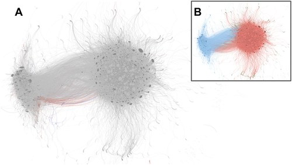
Click for Abstract & Key Figure
Fact‐checks have become a popular intervention aimed at tackling misinformation, yet concern has persisted related to the potential for fact‐checking to inadvertently amplify false narratives—a phenomenon commonly referred to as a “backfire effect.” At the same time, recent evidence from research on repeated claims has suggested that there is a risk that fact‐checks may also generate misperceptions regarding societal beliefs—or an “illusory consensus” effect. This paper presents findings from an ecologically valid two‐wave experimental study that tested whether repeated fact‐checking interventions could cause either of these negative outcomes. To further enhance the validity of the design, we draw on quota‐balanced samples of participants from the United States, France, and South Africa ( N = 680), who were presented with a set of true and false posts taken from online discussions regarding the 2024 Summer Olympic Games in Paris, France. Outcome measures focused on personal accuracy judgments (i.e., how accurate participants deemed each claim) and consensus estimates (i.e., whether their fellow citizens would believe each claim). After the Olympics concluded, participants were asked to assess both new and previously reviewed statements. Consistent with prior work, results indicate no evidence of the backfire effect ( = 0.048). The findings also provide evidence of a small “illusory consensus” effect ( = 0.125), whereby participants who had previously seen fact‐checks were more likely to estimate that the wider population would accept these debunked claims as accurate. Supplementary analyses of true statements reveal that fact‐checks produced large, durable improvements in accuracy judgments ( = 0.71–0.91), suggesting that fact‐checking was substantially more effective at reinforcing correct beliefs than it was at generating unintended consequences. Item‐level analyses further reveal heterogeneity across misinformation narratives, indicating that the specific content of false claims may moderate both the persistence of corrections and consensus distortions. Implications for fact‐checking strategies and public perceptions of misinformation, including the need for further studies which incorporate group dynamics, are discussed and debated.
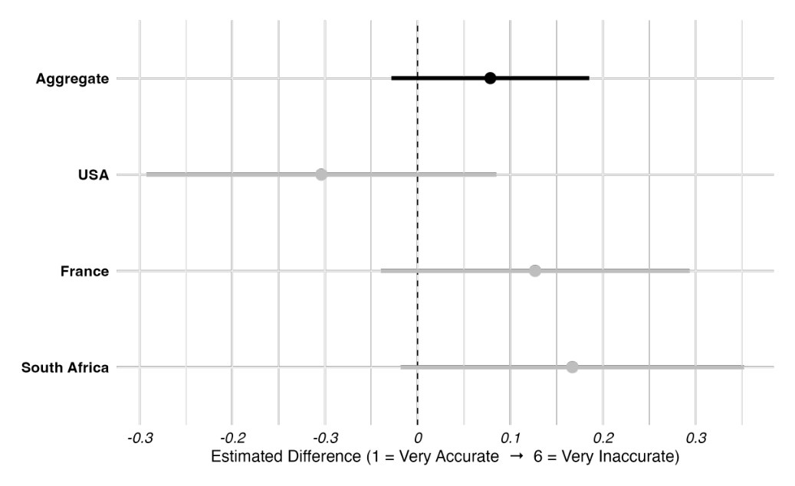
Click for Abstract & Key Figure
The global reach of misinformation has exacerbated harms in low- and middle-income countries faced with deficiencies in funding, platform engagement, and media literacy. These challenges have reiterated the need for the development of strategies capable of addressing misinformation that cannot be countered using popular fact-checking methods. Focusing on Kenya’s contentious 2022 election, we evaluate a novel method for democratizing debunking efforts termed “social truth queries” (STQs), which use questions posed by everyday users to draw reader attention to the veracity of the targeted misinformation in the aim of minimizing its impact. In an online survey of Kenyan participants ( N ~ 4,000), we test the efficacy of STQs in reducing the influence of electoral misinformation which could not have been plausibly fact-checked using existing methods. We find that STQs reduce the perceived accuracy of misinformation while also reducing trust in prominent disseminators of misinformation, with null results for sharing propensities. While effect sizes are small across conditions, assessments of the respondents most susceptible to misinformation reveal larger potential effects if targeted at vulnerable users. These findings collectively illustrate the potential of STQs to expand the reach of debunking efforts to a wider array of actors and misinformation clusters.
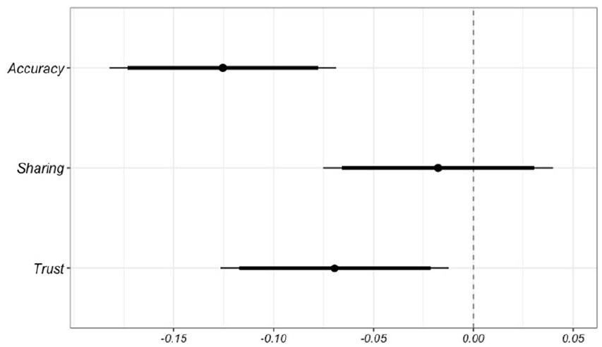
Click for Abstract & Key Figure
The spread of false information on social media is a growing problem that has necessitated the development of interventions to reduce its impact. We tested the potential effectiveness of social “truth queries” — user replies that draw attention to truth — as a novel intervention for reducing the impact of false information shared on social media. Participants were shown Tweets containing false information that appeared with user replies containing truth queries (Experiments 1-3), no replies (Experiments 1-3), or user replies unrelated to truth (Experiments 2-3) and asked to judge either the truth of the information contained in the Tweet or their likelihood of sharing it. We consistently found that social truth queries reduce belief in and reported intent to share Tweets containing false information compared to no replies or replies unrelated to truth. The findings suggest the usefulness of truth queries as a simple, flexible, user-driven approach to addressing online misinformation.
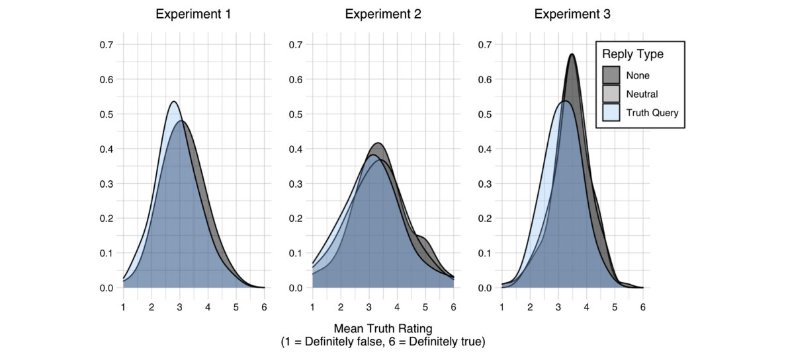
Click for Abstract & Key Figure
Misinformation online poses a range of threats, from subverting democratic processes to undermining public health measures. Proposed solutions range from encouraging more selective sharing by individuals to removing false content and accounts that create or promote it. Here we provide a framework to evaluate interventions aimed at reducing viral misinformation online both in isolation and when used in combination. We begin by deriving a generative model of viral misinformation spread, inspired by research on infectious disease. By applying this model to a large corpus (10.5 million tweets) of misinformation events that occurred during the 2020 US election, we reveal that commonly proposed interventions are unlikely to be effective in isolation. However, our framework demonstrates that a combined approach can achieve a substantial reduction in the prevalence of misinformation. Our results highlight a practical path forward as misinformation online continues to threaten vaccination efforts, equity and democratic processes around the globe.
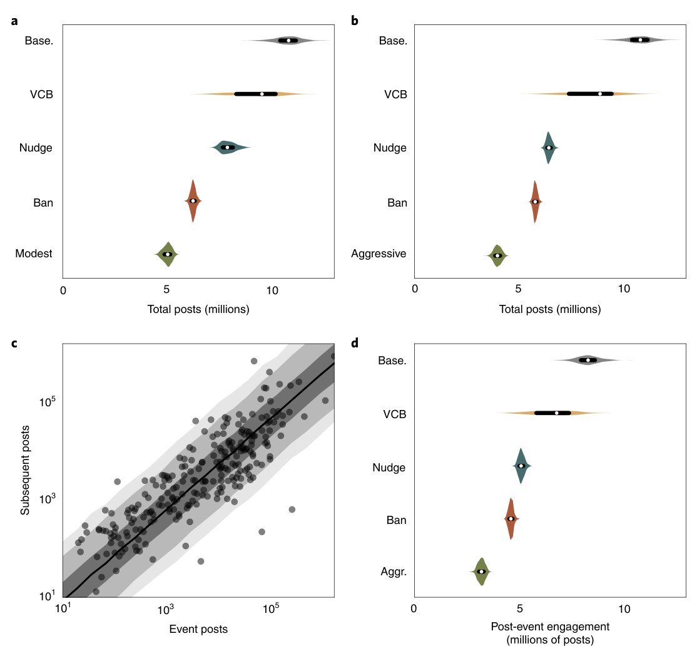
04Sport & Politics
Click for Abstract & Key Figure
This study examines whether state‐linked sportswashing—through perceived associations between states and sports entities—can shield states from public scrutiny over human rights abuses. We analyze changes in Chelsea F.C. supporters’ online behavior following Roman Abramovich's announcement to relinquish control of the club during Russia's invasion of Ukraine. We collected over 700,000 tweets from 7414 profiles of London‐based English Premier League fans. Using a fine‐tuned BERT machine learning model, we classified tweets mentioning the invasion, criticizing Russia, or supporting Ukraine. We applied a generalized synthetic control method to compare Chelsea fans’ online behavior to that of other clubs’ fans before and after the announcement. After the announcement, Chelsea fans were less likely than other fans to discuss the invasion, support Ukraine, or criticize Russia. The findings suggest that perceptions of state‐linked associations can influence supporter online behavior via social identity mechanisms, potentially mitigating criticism of state actions.
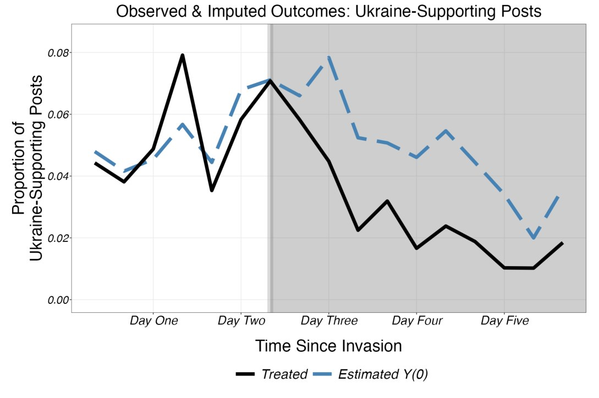
Click for Abstract
This study explores the dynamics of colorblind racism, intersectionality, and racially coded language in sports discourse on social media (Twitter/X), focusing on the contrasting public treatment of African American athlete Angel Reese and White American athlete Caitlin Clark before, during, and after the 2023 NCAA Women’s Basketball Championship. Analyzing 779,188 tweets using the Large Language Model (LLM) RoBERTa, we identify distinct patterns in fan interactions that reveal pervasive elements of colorblind racism and intersecting gender biases in the post-Title IX era. Although Clark and Reese performed nearly identical gestures at different times, Clark’s behavior was often perceived as more acceptable compared to Reese’s, underscoring how both racial and gender dynamics shape public perceptions. In addition, we observe a tendency among Twitter/X users to downplay the significance of racism (minimization of race) and engage in cultural racism, supporting colorblind racist framing. However, our findings also highlight an emerging counter-discourse that challenges these narratives, with supportive reactions toward Reese significantly outweighing the negative and directly opposing the colorblind racism frames. This research contributes to the literature on race, gender, sports, and digital media by offering real-time insights into how fan discourse both perpetuates and contests racial and gendered stereotypes.
Click for Abstract & Key Figure
Recent scholarship studying the impact of race-based prejudice has emphasized its rampant persistence throughout all aspects of modern society, including the world of sports. Prior research from American leagues has shown that even referees, trained officials intended to enact neutral judgements, are subject to bias against Black and dark-skinned players. To extend these studies and inform policies aimed at combating racial bias in public spaces more broadly, we report results from a unique dataset of over 6500 player-year observations from the Italian Serie A to examine whether these biases persist in European football. Our results show that darker-skinned players receive more foul calls and more cards than lighter-skinned players, controlling for a range of potential confounders and productivity-relevant mediators. By exploiting an absence of fans induced by the COVID-19 pandemic, we also present preliminary evidence that fans may play a key role in inducing poor calls against darker-skinned players.
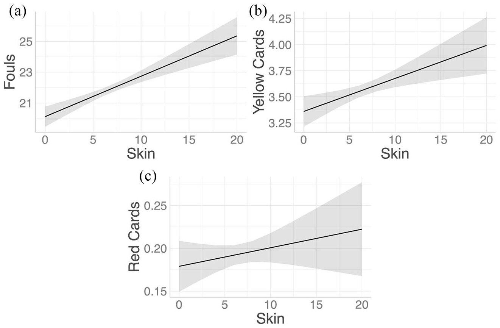
05Methods & Data
Click for Abstract & Key Figure
While Large Language Models (LLMs) have transformed content analysis, their ability to self-correct to achieve higher agreement with human coders remains contested. Recent evidence suggests LLMs fail to self-correct on reasoning tasks, but it is unclear if this limitation applies to classification, where the goal is maximizing overlap with human ground truth. We investigate iterative self-refinement, a pipeline where a model generates an initial classification, critiques its own output, and generates a final refined prediction. We test this across 14 variables (spanning framing, emotions, styles, politics, and topics) using a smaller, cost-effective model (Gemini 2 Flash) by systematically isolating the effects of codebooks versus few-shot examples. Results demonstrate a clear trade-off: refinement significantly boosts human alignment for complex, low-baseline constructs but degrades performance on simple, high-baseline tasks. Notably, a smaller model using refinement matches the accuracy of state-of-the-art reasoning models (Gemini 3 Flash) on complex tasks at a lower cost. These findings establish boundary conditions for self-correction, showing that external structure and task complexity jointly determine when refinement improves data quality.
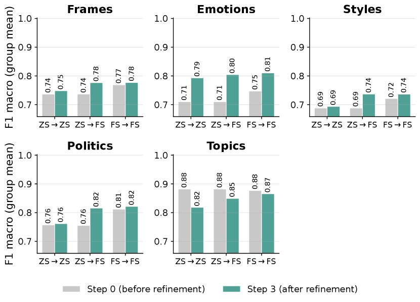
Click for Abstract & Key Figure
Understanding the spread of online rumors is a pressing societal challenge and an active area of research across domains. In the context of the 2022 U.S. midterm elections, one influential social media platform for sharing information — including rumors that may be false, misleading, or unsubstantiated — was Twitter (now renamed X). To increase understanding of the dynamics of online rumors about elections, we present and analyze a dataset of 1.81 million Twitter posts corresponding to 135 distinct rumors which spread online during the midterm election season (September 5 to December 1, 2022). We describe how this data was collected, compiled, and supplemented, and provide a series of exploratory analyses along with comparisons to a previously published dataset on 2020 election rumors. We also conduct a mixed-methods analysis of five distinct rumors about the election in Arizona, a particularly prominent focus of 2022 election rumoring. Finally, we provide a set of potential future directions for how this dataset could be used to facilitate future research into online rumors, misinformation, and disinformation.
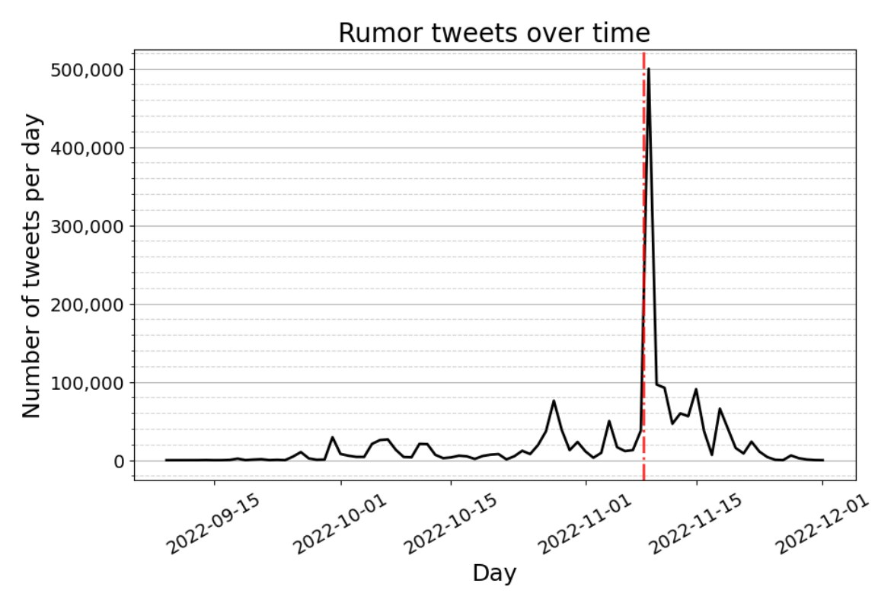
Click for Abstract & Key Figure
In countries ranging from the Philippines to Brazil, political actors have embraced WhatsApp. In India, WhatsApp groups backed by political parties are suspected of conveying misinformation and/or of circulating hateful content pointed towards minority groups, potentially leading to offline violence. They are also seen as one of the reasons for the dominance of the ruling party (the BJP). Yet, despite this narrative, we so far know littleabout the content shared on these partisan groups nor about the way in which (mis-)informationcirculates on them. In this manuscript, we describe the visual content of 533 closed threads maintained by party workers across the state of Uttar Pradesh, collected over aperiod of 9 months. Manual coding of around 36,000 images allows us to estimate the amount of misinformation/hateful content on one hand, and partisan content on the other. Additional matching of this data with other sources and analyses based on computer vision techniques inturn allows us to evaluate the extent to which the content posted on WhatsApp threads may serve the interests of the ruling party. Analyses suggest that partisan threads contain relatively few hateful or misinformed posts; more surprisingly maybe, most content cannot easily be classified as “partisan”. While much content appears to be religion-related, which may serve an indirect partisan role, the largest share of the content is more easily classifiable as phatic or entertainment related.
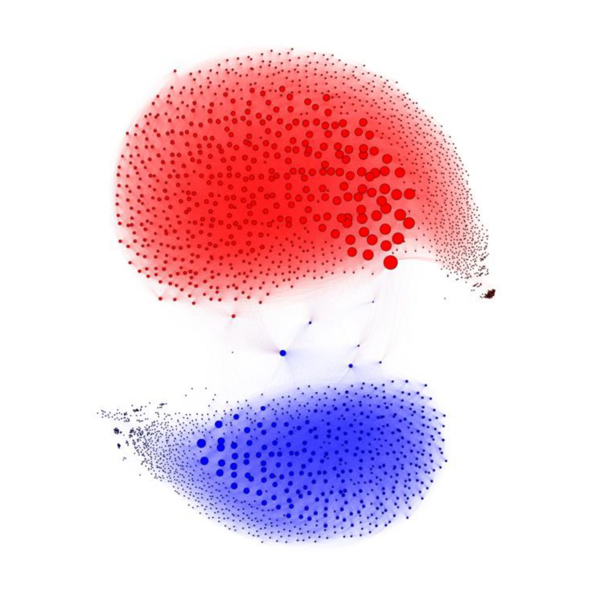